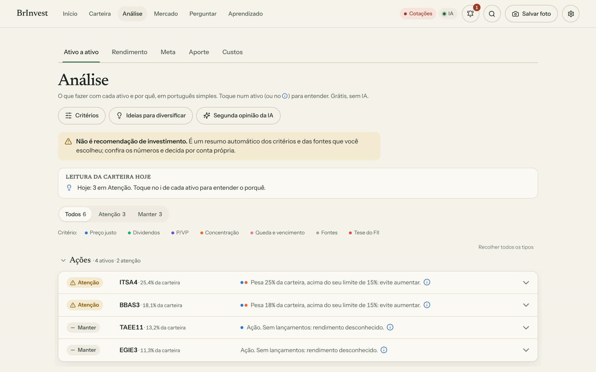
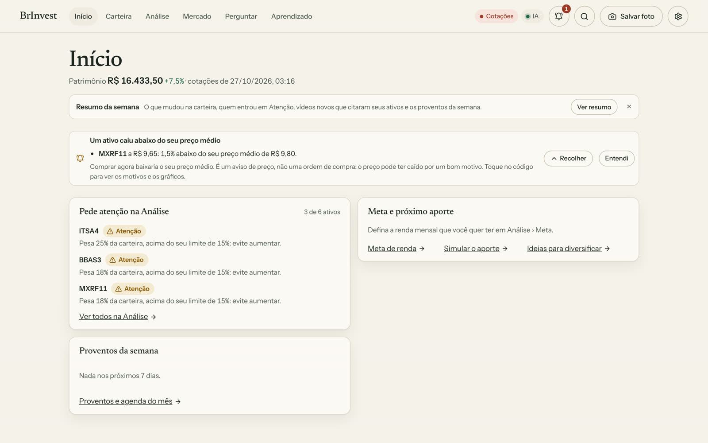

BrInvest
Mesa pessoal de análise da carteira na B3, com uma IA que mostra o custo antes de rodar.
- O problema
- Acompanhar preço-teto e dividendos pedia planilha, e aproveitar os vídeos sobre investimento pedia horas assistindo.
- Onde roda
- App local no Windows, com instalador gerado pelo GitHub Actions. O celular abre pelo Wi-Fi de casa.
- Onde a IA entra
- O Claude lê a transcrição de um vídeo ou um documento e propõe metodologias de cálculo. O app mostra o custo estimado e só chama a IA depois da confirmação.
Como funciona
Toque num passo para ver onde ele acontece no diagrama.


Decisões que eu defendo
- Ler é de graça: legenda do vídeo, texto do PDF e células da planilha são extraídos sem IA. A IA só entra quando vale o custo.
- Toda análise mostra o custo antes e o gasto do mês depois, com aviso se passar do crédito.
- Sem chave de API, dá para copiar o pedido para o claude.ai, colar a resposta de volta e importar, com custo zero.
- O que a IA propõe entra como metodologia proposta. Só vira regra se eu aceitar.
Limites
Apoio à decisão, não recomendação de investimento. Os números mostram a fonte e avisam quando falta dado.
Tecnologias
- Python
- React
- TypeScript
- pywebview
- Claude API
- GitHub Actions
- unittest